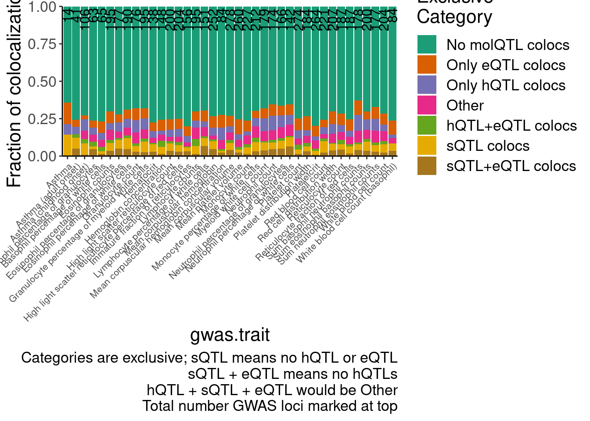
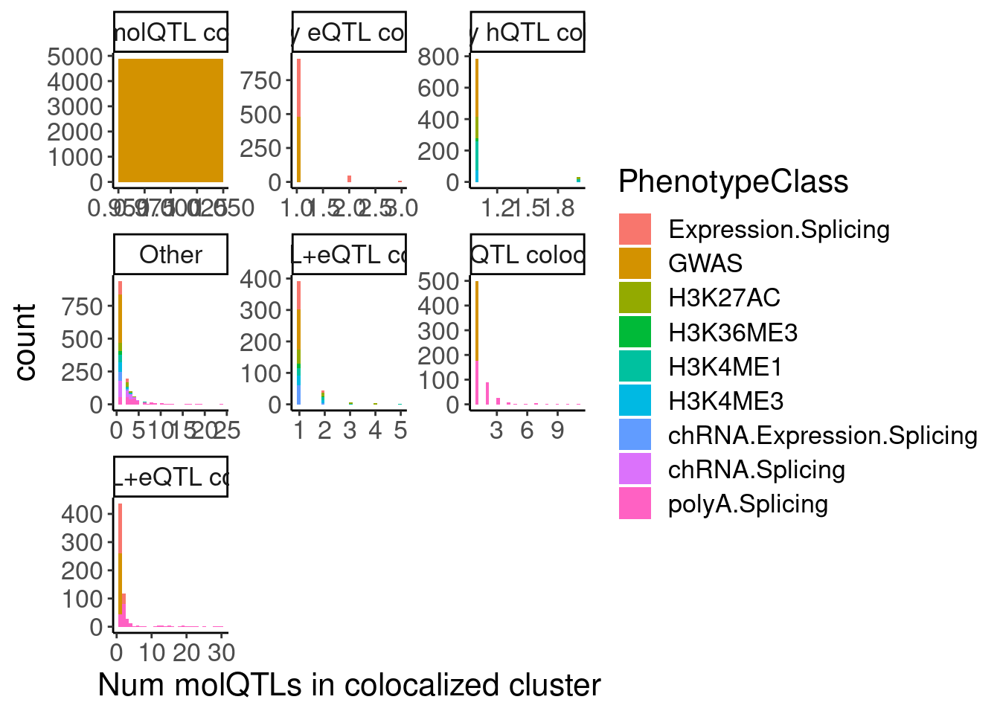
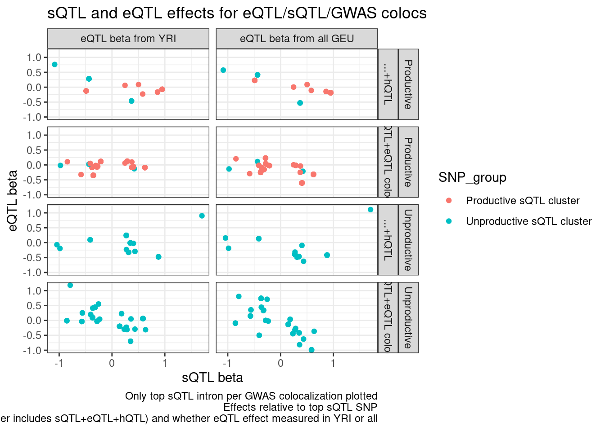
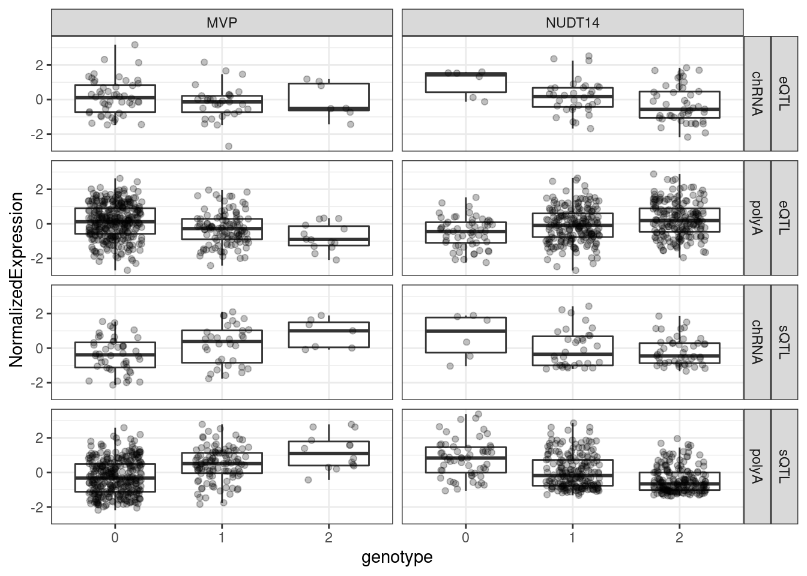
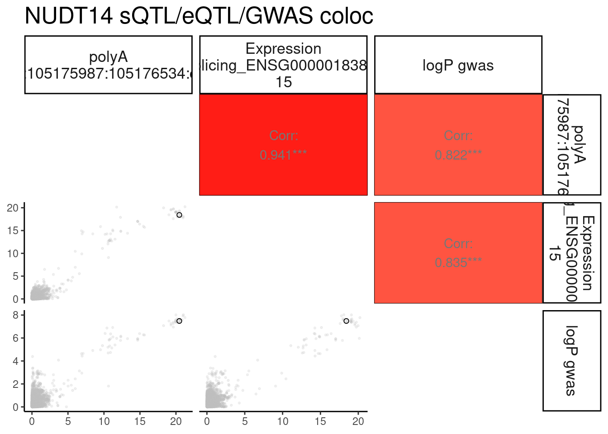
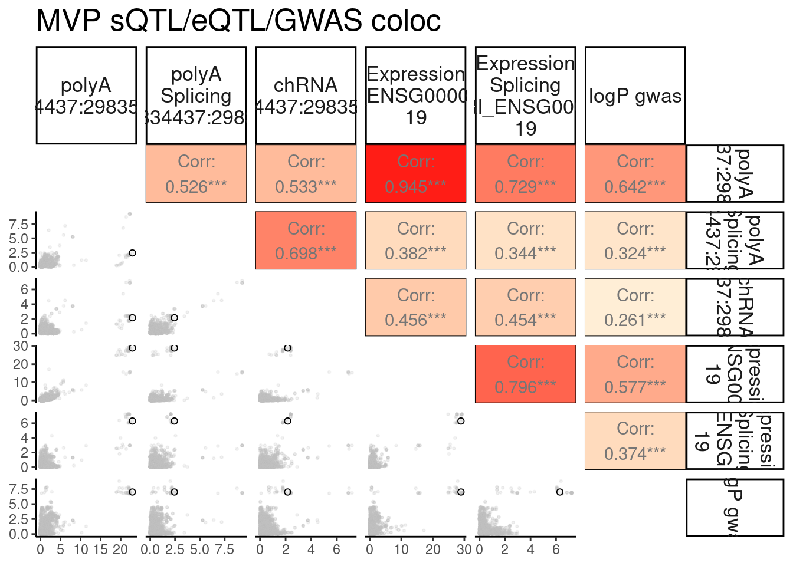
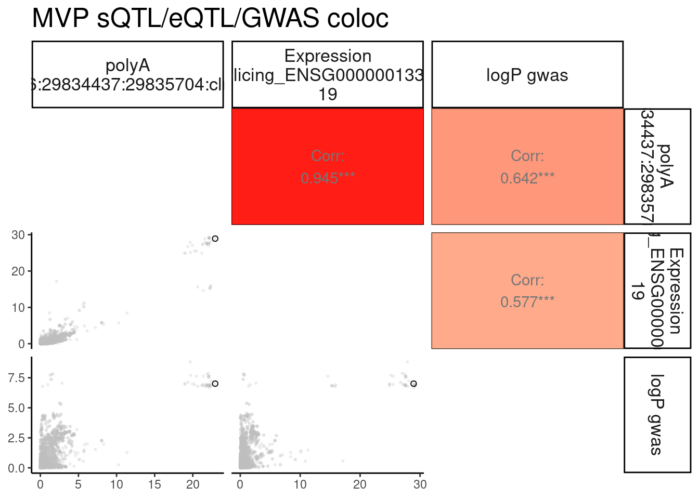

20230420_FindGWASeQTLsQTLColocsToPlot
2023-04-20
Last updated: 2023-04-25
Checks: 6 1
Knit directory:
ChromatinSplicingQTLs/analysis/
This reproducible R Markdown analysis was created with workflowr (version 1.7.0). The Checks tab describes the reproducibility checks that were applied when the results were created. The Past versions tab lists the development history.
The R Markdown is untracked by Git. To know which version of the R
Markdown file created these results, you’ll want to first commit it to
the Git repo. If you’re still working on the analysis, you can ignore
this warning. When you’re finished, you can run
wflow_publish to commit the R Markdown file and build the
HTML.
Great job! The global environment was empty. Objects defined in the global environment can affect the analysis in your R Markdown file in unknown ways. For reproduciblity it’s best to always run the code in an empty environment.
The command set.seed(20191126) was run prior to running
the code in the R Markdown file. Setting a seed ensures that any results
that rely on randomness, e.g. subsampling or permutations, are
reproducible.
Great job! Recording the operating system, R version, and package versions is critical for reproducibility.
Nice! There were no cached chunks for this analysis, so you can be confident that you successfully produced the results during this run.
Great job! Using relative paths to the files within your workflowr project makes it easier to run your code on other machines.
Great! You are using Git for version control. Tracking code development and connecting the code version to the results is critical for reproducibility.
The results in this page were generated with repository version ddf600d. See the Past versions tab to see a history of the changes made to the R Markdown and HTML files.
Note that you need to be careful to ensure that all relevant files for
the analysis have been committed to Git prior to generating the results
(you can use wflow_publish or
wflow_git_commit). workflowr only checks the R Markdown
file, but you know if there are other scripts or data files that it
depends on. Below is the status of the Git repository when the results
were generated:
Ignored files:
Ignored: .DS_Store
Ignored: .Rhistory
Ignored: .Rproj.user/
Ignored: analysis/.Rhistory
Ignored: analysis/figure/
Ignored: code/.DS_Store
Ignored: code/.RData
Ignored: code/._report.html
Ignored: code/.ipynb_checkpoints/
Ignored: code/.snakemake/
Ignored: code/APA_Processing/
Ignored: code/Alignments/
Ignored: code/ChromHMM/
Ignored: code/ENCODE/
Ignored: code/ExpressionAnalysis/
Ignored: code/ExtractPhenotypeBedByGenotype.py
Ignored: code/FastqFastp/
Ignored: code/FastqFastpSE/
Ignored: code/FastqSE/
Ignored: code/FineMapping/
Ignored: code/Genotypes/
Ignored: code/H3K36me3_CutAndTag.pdf
Ignored: code/IntronSlopes/
Ignored: code/LR.bed
Ignored: code/LR.seq.bed
Ignored: code/LongReads/
Ignored: code/Metaplots/
Ignored: code/Misc/
Ignored: code/MiscCountTables/
Ignored: code/Multiqc/
Ignored: code/Multiqc_chRNA/
Ignored: code/NonCodingRNA/
Ignored: code/NonCodingRNA_annotation/
Ignored: code/PairwisePi1Traits.P.all.txt.gz
Ignored: code/PeakCalling/
Ignored: code/Phenotypes/
Ignored: code/PlotGruberQTLs/
Ignored: code/PlotQTLs/
Ignored: code/ProCapAnalysis/
Ignored: code/QC/
Ignored: code/QTL_SNP_Enrichment/
Ignored: code/QTLs/
Ignored: code/RPKM_tables/
Ignored: code/ReadLengthMapExperiment/
Ignored: code/ReadLengthMapExperimentResults/
Ignored: code/ReadLengthMapExperimentSpliceCounts/
Ignored: code/ReferenceGenome/
Ignored: code/Rplots.pdf
Ignored: code/Session.vim
Ignored: code/SmallMolecule/
Ignored: code/SplicingAnalysis/
Ignored: code/TODO
Ignored: code/Tehranchi/
Ignored: code/bigwigs/
Ignored: code/bigwigs_FromNonWASPFilteredReads/
Ignored: code/config/.DS_Store
Ignored: code/config/._.DS_Store
Ignored: code/config/.ipynb_checkpoints/
Ignored: code/config/config.local.yaml
Ignored: code/dag.pdf
Ignored: code/dag.png
Ignored: code/dag.svg
Ignored: code/debug.ipynb
Ignored: code/debug_python.ipynb
Ignored: code/deepTools/
Ignored: code/featureCounts/
Ignored: code/featureCountsBasicGtf/
Ignored: code/gwas_summary_stats/
Ignored: code/hyprcoloc/
Ignored: code/igv_session.xml
Ignored: code/isoseqbams/
Ignored: code/log
Ignored: code/logs/
Ignored: code/notebooks/.ipynb_checkpoints/
Ignored: code/pi1/
Ignored: code/rules/.ProcessSmallMoleculeData.smk.swp
Ignored: code/rules/.ipynb_checkpoints/
Ignored: code/rules/OldRules/
Ignored: code/rules/notebooks/
Ignored: code/scratch/
Ignored: code/scripts/.ipynb_checkpoints/
Ignored: code/scripts/GTFtools_0.8.0/
Ignored: code/scripts/__pycache__/
Ignored: code/scripts/liftOverBedpe/liftOverBedpe.py
Ignored: code/snakemake.dryrun.log
Ignored: code/snakemake.log
Ignored: code/snakemake.sbatch.log
Ignored: code/snakemake_profiles/slurm/__pycache__/
Ignored: code/test.introns.bed
Ignored: code/test.introns2.bed
Ignored: code/test.log
Ignored: code/tracks.xml
Ignored: data/.DS_Store
Ignored: data/GWAS_catalog_summary_stats_sources/._list_gwas_summary_statistics_6_Apr_2022-10.csv
Ignored: data/GWAS_catalog_summary_stats_sources/._list_gwas_summary_statistics_6_Apr_2022-11.csv
Ignored: data/GWAS_catalog_summary_stats_sources/._list_gwas_summary_statistics_6_Apr_2022-2.csv
Ignored: data/GWAS_catalog_summary_stats_sources/._list_gwas_summary_statistics_6_Apr_2022-3.csv
Ignored: data/GWAS_catalog_summary_stats_sources/._list_gwas_summary_statistics_6_Apr_2022-4.csv
Ignored: data/GWAS_catalog_summary_stats_sources/._list_gwas_summary_statistics_6_Apr_2022-5.csv
Ignored: data/GWAS_catalog_summary_stats_sources/._list_gwas_summary_statistics_6_Apr_2022-6.csv
Ignored: data/GWAS_catalog_summary_stats_sources/._list_gwas_summary_statistics_6_Apr_2022-7.csv
Ignored: data/GWAS_catalog_summary_stats_sources/._list_gwas_summary_statistics_6_Apr_2022-8.csv
Ignored: data/GWAS_catalog_summary_stats_sources/._list_gwas_summary_statistics_6_Apr_2022.csv
Ignored: data/Metaplots/.DS_Store
Untracked files:
Untracked: analysis/20230417_SusieFinemapEnrichment.Rmd
Untracked: analysis/20230420_FindeQTLsQTLGWAS_Colocs.Rmd
Untracked: data/Ben_ncQTL.groups.tsv
Untracked: output/ColocPlotData.MVP.tsv.gz
Untracked: output/ColocPlotData.NUDT15.tsv.gz
Unstaged changes:
Modified: code/scripts/GenometracksByGenotype
Note that any generated files, e.g. HTML, png, CSS, etc., are not included in this status report because it is ok for generated content to have uncommitted changes.
There are no past versions. Publish this analysis with
wflow_publish() to start tracking its development.
knitr::opts_chunk$set(echo = TRUE, warning = F, message = F)
library(tidyverse)── Attaching packages ─────────────────────────────────────── tidyverse 1.3.1 ──✔ ggplot2 3.3.6 ✔ purrr 0.3.4
✔ tibble 3.1.7 ✔ dplyr 1.0.9
✔ tidyr 1.2.0 ✔ stringr 1.4.0
✔ readr 2.1.2 ✔ forcats 0.5.1── Conflicts ────────────────────────────────────────── tidyverse_conflicts() ──
✖ dplyr::filter() masks stats::filter()
✖ dplyr::lag() masks stats::lag()library(RColorBrewer)
library(data.table)
Attaching package: 'data.table'The following objects are masked from 'package:dplyr':
between, first, lastThe following object is masked from 'package:purrr':
transposelibrary(edgeR)Loading required package: limma# Set theme
theme_set(
theme_classic() +
theme(text=element_text(size=16, family="Helvetica")))
# I use layer a lot, to rotate long x-axis labels
Rotate_x_labels <- theme(axis.text.x = element_text(angle = 45, vjust = 1, hjust=1))
#test plot
ggplot(mtcars, aes(x=mpg, y=cyl)) +
geom_point()
gwas.traits <- read_tsv("../code/config/gwas_table.tsv") %>%
dplyr::rename(GWAS.accession=gwas, gwas.trait=trait)
hyprcoloc.results <- read_tsv("../code/hyprcoloc/Results/ForGWASColoc/GWASColoc_ChromatinAPAAndRNA/results.txt.gz") %>%
# hyprcoloc.results <- read_tsv("../code/hyprcoloc/Results/ForGWASColoc/GWASColoc_ChromatinAPAAndRNAYRI/results.txt.gz") %>%
dplyr::rename(GWAS.Loci = GWASLeadSnpChrom_Pos_RefAllele_AltAllele_rsID_trait) %>%
separate(GWAS.Loci, into=c("GWAS.LeadSNP.Chrom", "GWAS.LeadSNP.Pos", "GWAS.accession"), sep="_", remove=F) %>%
separate_rows(ColocalizedTraits, sep = ",") %>%
mutate(IsColocalizedWithSomething = !ColocalizedTraits == "None") %>%
mutate(Trait = if_else(IsColocalizedWithSomething, ColocalizedTraits, DroppedTrait)) %>%
dplyr::select(-DroppedTrait, -ColocalizedTraits) %>%
mutate(Trait = str_replace_all(Trait, " ", "")) %>%
mutate(GWAS.Loci = str_replace_all(GWAS.Loci, " ", "")) %>%
mutate(Trait = if_else(Trait == GWAS.Loci, paste("GWAS",GWAS.Loci,sep = ";"),Trait)) %>%
separate(Trait, into=c("PhenotypeClass", "Phenotype"), sep=";", remove=F) %>%
group_by(GWAS.Loci, HyprcolocIteration) %>%
mutate(ColocalizedClusterContainsGWASTrait = any(PhenotypeClass=="GWAS") & IsColocalizedWithSomething) %>%
ungroup() %>%
inner_join(gwas.traits %>%
dplyr::select(1:2))
hyprcoloc.results$PhenotypeClass %>% unique() [1] "Expression.Splicing" "H3K4ME1"
[3] "H3K4ME3" "polyA.Splicing"
[5] "chRNA.Splicing" "H3K27AC"
[7] "GWAS" "H3K36ME3"
[9] "chRNA.Expression.Splicing" "APA_Nuclear"
[11] "APA_Total" NA
[13] "chr19_47135282_IMSGC2019" "chr1_92687078_IMSGC2019"
[15] "chr1_85264137_IMSGC2019" "chr1_91756532_IMSGC2019"
[17] "chr1_100824876_IMSGC2019" "chr2_43128185_IMSGC2019"
[19] "chr1_157716547_IMSGC2019" "chr12_57713053_IMSGC2019"
[21] "chr11_118872577_IMSGC2019" "chr12_123119506_IMSGC2019"
[23] "chr14_75547955_IMSGC2019" "chr14_88057144_IMSGC2019"
[25] "chr6_135512325_IMSGC2019" "chr5_40396323_IMSGC2019"
[27] "chr16_85987899_IMSGC2019" "chr7_50288743_IMSGC2019"
[29] "chr11_61026179_IMSGC2019" "chr19_49333989_IMSGC2019"
[31] "chr3_102030178_IMSGC2019" "chr1_192571891_IMSGC2019"
[33] "chr2_61015275_IMSGC2019" "chr2_230257114_IMSGC2019"
[35] "chr14_102799507_IMSGC2019" "chr20_54173204_IMSGC2019"
[37] "chr3_28030595_IMSGC2019" "chr22_50532837_IMSGC2019"
[39] "chr6_27099878_IMSGC2019" "chr6_159044945_IMSGC2019"
[41] "chr6_137116920_IMSGC2019" "chr6_137638318_IMSGC2019"
[43] "chr5_159332892_IMSGC2019" "chr15_90344352_IMSGC2019"
[45] "chr6_27893892_IMSGC2019" "chr16_79077400_IMSGC2019"
[47] "chr8_127801845_IMSGC2019" "chr7_149592373_IMSGC2019"
[49] "chr18_58680812_IMSGC2019" hyprcoloc.results %>%
filter(!GWAS.accession=="IMSGC2019") %>%
pull(PhenotypeClass) %>% unique() [1] "Expression.Splicing" "H3K4ME1"
[3] "H3K4ME3" "polyA.Splicing"
[5] "chRNA.Splicing" "H3K27AC"
[7] "GWAS" "H3K36ME3"
[9] "chRNA.Expression.Splicing" "APA_Nuclear"
[11] "APA_Total" NA PhenotypeRecodes = c("H3K36ME3"="hQTL", "H3K27AC"="hQTL", "H3K4ME3"="hQTL", "H3K4ME1"="hQTL",
"Expression.Splicing"="eQTL", "Expression.Splicing.Subset_YRI"="eQTL", "polyA.Splicing.Subset_YRI"="sQTL", "chRNA.Expression.Splicing"="chRNA eQTL",
"APA_Nuclear"="APA QTL", "APA_Total"="APA QTL", "polyA.Splicing"="sQTL", "GWAS"="GWAS")
PhenotypeRecodes.df <- data.frame(PhenotypeRecodes) %>%
rownames_to_column("PhenotypeClass")
hyprcoloc.results %>%
filter(GWAS.Loci == "chr9_79683075_GCST004627") %>%
filter(is.na(PhenotypeClass))# A tibble: 1 × 15
GWAS.Loci GWAS.LeadSNP.Ch… GWAS.LeadSNP.Pos GWAS.accession HyprcolocIterat…
<chr> <chr> <chr> <chr> <dbl>
1 chr9_796830… chr9 79683075 GCST004627 NA
# … with 10 more variables: PosteriorColocalizationPr <dbl>,
# RegionalAssociationPr <dbl>, TopCandidateSNP <chr>,
# ProportionPosteriorPrExplainedByTopSNP <dbl>,
# IsColocalizedWithSomething <lgl>, Trait <chr>, PhenotypeClass <chr>,
# Phenotype <chr>, ColocalizedClusterContainsGWASTrait <lgl>,
# gwas.trait <chr>hyprcoloc.results.toplot <- hyprcoloc.results %>%
filter(!GWAS.accession=="IMSGC2019") %>%
left_join(PhenotypeRecodes.df) %>%
mutate(PhenotypeRecodes = if_else(is.na(PhenotypeRecodes), PhenotypeClass, PhenotypeRecodes)) %>%
filter(!PhenotypeRecodes == "APA QTL") %>%
group_by(GWAS.Loci, HyprcolocIteration) %>%
filter(any(ColocalizedClusterContainsGWASTrait) | PhenotypeClass=="GWAS") %>%
mutate(Category = case_when(
all(ColocalizedClusterContainsGWASTrait==FALSE) | all(is.na(HyprcolocIteration)) ~ "No molQTL colocs",
all(PhenotypeRecodes %in% c("GWAS", "hQTL")) ~ "Only hQTL colocs",
all(PhenotypeRecodes %in% c("GWAS", "eQTL")) ~ "Only eQTL colocs",
all(PhenotypeRecodes %in% c("GWAS", "eQTL", "hQTL", "chRNA eQTL")) ~ "hQTL+eQTL colocs",
all(PhenotypeRecodes %in% c("GWAS", "sQTL")) ~ "sQTL colocs",
all(PhenotypeRecodes %in% c("GWAS", "sQTL", "eQTL", "eQTL")) ~ "sQTL+eQTL colocs",
# all(PhenotypeRecodes %in% c("GWAS", "sQTL", "chRNA eQTL", "eQTL", "hQTL")) ~ "sQTL+eQTL+hQTL colocs",
TRUE ~ "Other"
)) %>%
ungroup()
# filter(Category=="Other")
Num.Gwas.loci <- hyprcoloc.results.toplot %>%
distinct(GWAS.Loci, .keep_all=T) %>%
count(GWAS.accession, gwas.trait)
hyprcoloc.results.toplot %>%
distinct(GWAS.Loci, .keep_all=T) %>%
count(Category,GWAS.accession, gwas.trait) %>%
ggplot(aes(x=gwas.trait)) +
geom_col(position="fill", aes( y=n, fill=Category)) +
geom_text(data=Num.Gwas.loci, aes(x=gwas.trait, label=n), y=Inf, hjust=1.1, size=4, angle=90) +
scale_fill_brewer(palette = "Dark2") +
Rotate_x_labels +
theme(axis.text.x = element_text(size=8)) +
labs(fill="Exclusive\nCategory", caption="Categories are exclusive; sQTL means no hQTL or eQTL\nsQTL + eQTL means no hQTLs\nhQTL + sQTL + eQTL would be Other\nTotal number GWAS loci marked at top", y="Fraction of colocalizations") +
scale_y_continuous(expand=c(0,0))
PC2.filter <- c("Expression.Splicing", "Expression.Splicing.Subset_YRI")
PC2.SignificanceFilter <- c("H3K27AC", "H3K4ME3", "H3K36ME3")
PC1.filter <- c("polyA.Splicing", "H3K27AC", "H3K4ME1", "H3K4ME3")
PC1.filter.Splicing <- PC1.filter[str_detect(PC1.filter, "Splicing")]
PC1.filter.NonSplicing <- PC1.filter[!str_detect(PC1.filter, "Splicing")]
dat.foreQTLQQ <- fread("../code/pi1/PairwisePi1Traits.P.all.txt.gz") %>%
filter((PC1 %in% PC1.filter))
IntronAnnotatins <- read_tsv("../data/IntronAnnotationsFromYang.tsv.gz") %>%
mutate(chrom = str_remove_all(chrom, "chr")) %>%
mutate(Intron = paste(chrom, start, end, sep=":")) %>%
filter(!str_detect(SuperAnnotation, "NoncodingGene"))
dat.foreQTLQQ.sQTLs <- dat.foreQTLQQ %>%
filter(PC1 %in% PC1.filter.Splicing) %>%
group_by(PC1, P1) %>%
filter(!any((PC2 %in% PC2.SignificanceFilter) & (trait.x.p.in.y < 0.01))) %>%
ungroup() %>%
filter(PC2 %in% PC2.filter) %>%
separate(P1, into=c("Intron", "Cluster"), sep=":clu", remove=F) %>%
inner_join(
IntronAnnotatins %>%
dplyr::select(Intron, SuperAnnotation),
by="Intron") %>%
group_by(PC1, PC2, Cluster) %>%
mutate(SNP_group = case_when(
all(str_detect(SuperAnnotation, "Productive")) ~ "Productive sQTL cluster",
any(str_detect(SuperAnnotation, "Unproductive")) ~ "Unproductive sQTL cluster",
TRUE ~ "sQTL Other"
))
# bind_rows(
# hyprcoloc.results.toplot %>%
# filter(Category == "sQTL+eQTL colocs") %>%
# filter(PhenotypeClass=="Expression.Splicing") %>%
# dplyr::select(GWAS.Loci, TopCandidateSNP),
# )
hyprcoloc.results.toplot %>%
# filter(Category == "sQTL+eQTL colocs") %>%
group_by(Category, GWAS.Loci) %>%
count(PhenotypeClass) %>%
ungroup() %>%
ggplot(aes(x=n)) +
geom_histogram(aes(fill=PhenotypeClass)) +
facet_wrap(~Category, scales="free") +
labs(x="Num molQTLs in colocalized cluster")
CategoriesWith_sQTLs <- c("sQTL+eQTL colocs", "Other", "sQTL")
inner_join(
hyprcoloc.results.toplot %>%
filter(Category %in% CategoriesWith_sQTLs) %>%
filter(PhenotypeClass %in% c("polyA.Splicing")) %>%
dplyr::select(GWAS.Loci, sQTL=Trait),
hyprcoloc.results.toplot %>%
filter(Category %in% CategoriesWith_sQTLs) %>%
filter(PhenotypeClass %in% c("Expression.Splicing")) %>%
dplyr::select(GWAS.Loci, eQTL=Trait, everything())
) %>%
inner_join(
dat.foreQTLQQ.sQTLs %>%
mutate(sQTL=paste(PC1, P1, sep=";"))
) %>%
mutate(IntronGroup = if_else(str_detect(SuperAnnotation, "Unproductive"), "Unproductive", "Productive")) %>%
group_by(GWAS.Loci, PC2) %>%
filter(p_permutation.x == min(p_permutation.x)) %>%
ungroup() %>%
mutate(Category = recode(Category, "Other"="...+hQTL")) %>%
mutate(PC2 = recode(PC2, "Expression.Splicing"="eQTL beta from all GEU","Expression.Splicing.Subset_YRI"="eQTL beta from YRI" )) %>%
ggplot(aes(x=beta.x, y=x.beta.in.y, color=SNP_group)) +
geom_point() +
facet_grid(IntronGroup ~ Category ~ PC2) +
theme_bw() +
# geom_smooth(method='lm') +
labs(x="sQTL beta", y="eQTL beta", title="sQTL and eQTL effects for eQTL/sQTL/GWAS colocs", caption="Only top sQTL intron per GWAS colocalization plotted\nEffects relative to top sQTL SNP\nFacets are intron level category category, gwas coloc category (Other includes sQTL+eQTL+hQTL) and whether eQTL effect measured in YRI or all")
Let’s also include the sQTL/GWAS colocs, because i’m curious how many of them have direction effects also consistent with eQTL regulation…
CandidateGenesToHighlight <- inner_join(
hyprcoloc.results.toplot %>%
filter(Category == "sQTL+eQTL colocs") %>%
filter(PhenotypeClass %in% c("polyA.Splicing")) %>%
dplyr::select(GWAS.Loci, sQTL=Trait),
hyprcoloc.results.toplot %>%
filter(Category == "sQTL+eQTL colocs") %>%
filter(PhenotypeClass %in% c("Expression.Splicing")) %>%
dplyr::select(GWAS.Loci, eQTL=Trait, everything())
) %>%
inner_join(
dat.foreQTLQQ.sQTLs %>%
mutate(sQTL=paste(PC1, P1, sep=";")) %>%
filter(PC2 == "Expression.Splicing")
) %>%
mutate(IntronGroup = if_else(str_detect(SuperAnnotation, "Unproductive"), "Unproductive", "Productive"))
CandidateGenesToHighlight %>%
filter(SNP_group == "Unproductive sQTL cluster") %>%
group_by(eQTL, GWAS.Loci) %>%
filter(any(abs(x.beta.in.y)>0.25 & IntronGroup=="Unproductive")) %>%
ungroup() %>%
distinct(GWAS.Loci)# A tibble: 50 × 1
GWAS.Loci
<chr>
1 chr16_30091839_GCST004606
2 chr17_46676279_GCST004606
3 chr12_6181375_GCST004616
4 chr17_46534416_GCST004626
5 chr16_30049923_GCST004617
6 chr17_46676279_GCST004617
7 chr22_41459919_GCST007800
8 chr16_29855474_GCST004599
9 chr6_10535358_GCST004609
10 chr12_8698552_GCST004619
# … with 40 more rowsCandidateGenesToHighlight %>%
filter(SNP_group == "Unproductive sQTL cluster") %>%
group_by(eQTL, GWAS.Loci) %>%
filter(any(abs(x.beta.in.y)>0.25 & IntronGroup=="Unproductive")) %>%
ungroup() %>%
distinct(P2, .keep_all=T)# A tibble: 16 × 45
GWAS.Loci sQTL eQTL GWAS.LeadSNP.Ch… GWAS.LeadSNP.Pos GWAS.accession
<chr> <chr> <chr> <chr> <chr> <chr>
1 chr16_30091839_… poly… Expr… chr16 30091839 GCST004606
2 chr17_46676279_… poly… Expr… chr17 46676279 GCST004606
3 chr17_46676279_… poly… Expr… chr17 46676279 GCST004606
4 chr12_6181375_G… poly… Expr… chr12 6181375 GCST004616
5 chr22_41459919_… poly… Expr… chr22 41459919 GCST007800
6 chr16_29855474_… poly… Expr… chr16 29855474 GCST004599
7 chr6_10535358_G… poly… Expr… chr6 10535358 GCST004609
8 chr12_8698552_G… poly… Expr… chr12 8698552 GCST004619
9 chr15_41404734_… poly… Expr… chr15 41404734 GCST004629
10 chr17_1879658_G… poly… Expr… chr17 1879658 GCST004630
11 chr14_105178084… poly… Expr… chr14 105178084 GCST004611
12 chr19_48871431_… poly… Expr… chr19 48871431 GCST004611
13 chr16_11373920_… poly… Expr… chr16 11373920 GCST004622
14 chr13_42452525_… poly… Expr… chr13 42452525 GCST004632
15 chr19_58440326_… poly… Expr… chr19 58440326 GCST004603
16 chr1_155208991_… poly… Expr… chr1 155208991 GCST004604
# … with 39 more variables: HyprcolocIteration <dbl>,
# PosteriorColocalizationPr <dbl>, RegionalAssociationPr <dbl>,
# TopCandidateSNP <chr>, ProportionPosteriorPrExplainedByTopSNP <dbl>,
# IsColocalizedWithSomething <lgl>, PhenotypeClass <chr>, Phenotype <chr>,
# ColocalizedClusterContainsGWASTrait <lgl>, gwas.trait <chr>,
# PhenotypeRecodes <chr>, Category <chr>, PC1 <chr>, P1 <chr>, Intron <chr>,
# Cluster <chr>, GeneLocus <chr>, p_permutation.x <dbl>, beta.x <dbl>, …CandidateGenesToHighlight.ToPlot <- CandidateGenesToHighlight %>%
separate(Intron, into=c("IntronChrom", "IntronStart", "IntronEnd"), sep=":", convert=T, remove=F ) %>%
filter(SNP_group == "Unproductive sQTL cluster") %>%
group_by(eQTL, GWAS.Loci) %>%
filter(any(abs(x.beta.in.y)>0.25 & IntronGroup=="Unproductive")) %>%
mutate(MinIntron = min(IntronStart), MaxIntron=max(IntronEnd)) %>%
ungroup()So far we have a list of 16 genes, many of which are represented as hits in multiple gwas for a total of 50ish sQTL/eQTL/GWAS colocs with large sQTL/eQTL effects that I want to plot…
dir.create("../code/scratch/Plot_sQTLeQTLGWASColocs/")
## Make bwList
bwList <- read_tsv("../code/PlotQTLs/bwList.tsv") %>%
filter(Group_label %in% c("polyA.RNA", "chRNA", "MetabolicLabelled.30min"))
FullGeuvadisBigwigs <- data.frame(BigwigFilepath = list.files("../code/bigwigs/Expression.Splicing")) %>%
mutate(BigwigFilepath = paste0("bigwigs/Expression.Splicing/",BigwigFilepath)) %>%
mutate(SampleID = str_replace(BigwigFilepath, "bigwigs/Expression.Splicing/(.+?).1.bw", "\\1")) %>%
mutate(Group_label = "polyA.RNA", Strand=".")
bwList %>% count(Group_label)
full_join(FullGeuvadisBigwigs, bwList) %>%
dplyr::select(SampleID, BigwigFilepath, Group_label, Strand) %>%
write_tsv("../code/PlotQTLs/bwList.AllPolyAAndchRNA.tsv")
read_tsv("../code/PlotQTLs/bwList.Groups.4col.tsv") %>%
filter(Group_label %in% c("polyA.RNA", "MetabolicLabelled.30min", "chRNA")) %>%
write_tsv("../code/PlotQTLs/bwList.Groups.4col.RNA.tsv")
#Write a bash script for plotting. Just pick one gwas row randomly for each of the distinct genes
CandidateGenesToHighlight.ToPlot %>%
mutate(score = ".", strand = str_extract(P1, "[+-]")) %>%
dplyr::select(IntronChrom, IntronStart, IntronEnd, P1, score, strand) %>%
mutate(IntronChrom=paste0("chr", IntronChrom)) %>%
arrange(IntronChrom, IntronStart, IntronEnd) %>%
distinct(.keep_all=T) %>%
write_tsv("/scratch/midway2/bjf79/Juncs.bed", col_names = F)
CandidateGenesToHighlight.ToPlot %>%
distinct(eQTL, .keep_all=T) %>%
mutate(n = row_number()) %>%
mutate(npad = str_pad(n, side="left", pad="0", width=2)) %>%
separate(TopCandidateSNP, into=c("SNP_Chrom", "SNP_Pos", "SNP_Ref", "SNP_Alt"), sep=":", remove=F) %>%
mutate(CustomScriptCall = str_glue("python scripts/GenometracksByGenotype/AggregateBigwigsForPlotting.py --BigwigList PlotQTLs/bwList.AllPolyAAndchRNA.tsv --BigwigListType KeyFile --OutputPrefix /scratch/midway2/bjf79/PlotDat --FilterJuncsByBed /scratch/midway2/bjf79/Juncs.bed --VCF Genotypes/1KG_GRCh38/{IntronChrom}.vcf.gz --SnpPos {GWAS.LeadSNP.Chrom}:{SNP_Pos} --SnpName {TopCandidateSNP} --Region {GWAS.LeadSNP.Chrom}:{MinIntron-300}-{MaxIntron+300} --GroupSettingsFile PlotQTLs/bwList.Groups.4col.RNA.tsv -vv --Bed12GenesToIni scripts/GenometracksByGenotype/PremadeTracks/gencode.v26.FromGTEx.genes.bed12.gz"),
PyGenometracksCall = str_glue("pyGenomeTracks --region {GWAS.LeadSNP.Chrom}:{MinIntron-300}-{MaxIntron+300} -out scratch/Plot_sQTLeQTLGWASColocs/{npad}_{GWAS.Loci}_{P2}.png --tracks /scratch/midway2/bjf79/PlotDattracks.ini")) %>%
dplyr::select(CustomScriptCall, PyGenometracksCall, n) %>%
gather("CommandType", "Command", -n) %>%
arrange(n) %>%
dplyr::select(Command) %>%
write_tsv("../code/scratch/Plot_sQTLeQTLGWASColocs/MakePlots.sh",col_names = F)After plotting those, some of the nicest examples that i think are worth highlighting in the manuscript are here:
Example1
Example2
I think I will also plot genotype/phenotype boxplots for these, in polyA splicing, chRNA splicing, polyA Expression, and chRNA Expression.
# Some scratch code to quickly get data or making these specific boxplots
##NUDT14 phenotypes
CandidateGenesToHighlight.ToPlot %>%
filter(GWAS.Loci %in% c( "chr14_105178084_GCST004611")) %>%
filter(sQTL == "polyA.Splicing;14:105175987:105176534:clu_34934_-") %>%
mutate(gwas.pid = str_replace(GWAS.Loci, "(^.+?_.+?_)(.+?$)", "\\1N_N_\\2")) %>%
mutate(pid = str_glue("{P1}:{gwas.pid}")) %>%
separate(TopCandidateSNP, into=c("SNP_Chrom", "SNP_Pos", "SNP_Ref", "SNP_Alt"), sep=":", remove=F) %>%
mutate(CustomScriptCall = str_glue("python scripts/GenometracksByGenotype/ExtractPhenotypeBedByGenotype.py --Bed /project2/yangili1/bjf79/ChromatinSplicingQTLs/code/QTLs/QTLTools/polyA.Splicing/OnlyFirstRepsForGWASColoc.sorted.qqnorm.bed.gz --VCF /project2/yangili1/bjf79/ChromatinSplicingQTLs/code/Genotypes/1KG_GRCh38/Autosomes.vcf.gz -vvv --SnpName {TopCandidateSNP} --SnpPos chr{SNP_Chrom}:{SNP_Pos} --FeatureName {pid} --CisWindowAroundSnpToGetFeatures 1000000 > scratch/Plot_sQTLeQTLGWASColocs/DatForBoxplots.NUDT14.sQTL.polyA.tsv")) %>%
pull(CustomScriptCall)
CandidateGenesToHighlight.ToPlot %>%
filter(GWAS.Loci %in% c( "chr14_105178084_GCST004611")) %>%
filter(sQTL == "polyA.Splicing;14:105175987:105176534:clu_34934_-") %>%
mutate(gwas.pid = str_replace(GWAS.Loci, "(^.+?_.+?_)(.+?$)", "\\1N_N_\\2")) %>%
mutate(pid = str_glue("{P1}:{gwas.pid}")) %>%
separate(TopCandidateSNP, into=c("SNP_Chrom", "SNP_Pos", "SNP_Ref", "SNP_Alt"), sep=":", remove=F) %>%
mutate(CustomScriptCall = str_glue("python scripts/GenometracksByGenotype/ExtractPhenotypeBedByGenotype.py --Bed /project2/yangili1/bjf79/ChromatinSplicingQTLs/code/QTLs/QTLTools/chRNA.Splicing/OnlyFirstRepsForGWASColoc.sorted.qqnorm.bed.gz --VCF /project2/yangili1/bjf79/ChromatinSplicingQTLs/code/Genotypes/1KG_GRCh38/Autosomes.vcf.gz -vvv --SnpName {TopCandidateSNP} --SnpPos chr{SNP_Chrom}:{SNP_Pos} --FeatureName {pid} --CisWindowAroundSnpToGetFeatures 1000000 > scratch/Plot_sQTLeQTLGWASColocs/DatForBoxplots.NUDT14.sQTL.chRNA.tsv")) %>%
pull(CustomScriptCall)
CandidateGenesToHighlight.ToPlot %>%
filter(GWAS.Loci %in% c("chr14_105178084_GCST004611")) %>%
filter(eQTL == "Expression.Splicing;ENSG00000183828.15") %>%
distinct(eQTL, .keep_all=T) %>%
mutate(gwas.pid = str_replace(GWAS.Loci, "(^.+?_.+?_)(.+?$)", "\\1N_N_\\2")) %>%
mutate(pid = str_glue("{Phenotype}:{gwas.pid}")) %>%
separate(TopCandidateSNP, into=c("SNP_Chrom", "SNP_Pos", "SNP_Ref", "SNP_Alt"), sep=":", remove=F) %>%
mutate(CustomScriptCall = str_glue("python scripts/GenometracksByGenotype/ExtractPhenotypeBedByGenotype.py --Bed /project2/yangili1/bjf79/ChromatinSplicingQTLs/code/QTLs/QTLTools/chRNA.Expression.Splicing/OnlyFirstRepsForGWASColoc.sorted.qqnorm.bed.gz --VCF /project2/yangili1/bjf79/ChromatinSplicingQTLs/code/Genotypes/1KG_GRCh38/Autosomes.vcf.gz -vvv --SnpName {TopCandidateSNP} --SnpPos chr{SNP_Chrom}:{SNP_Pos} --FeatureName {pid} --CisWindowAroundSnpToGetFeatures 1000000 > scratch/Plot_sQTLeQTLGWASColocs/DatForBoxplots.NUDT14.eQTL.chRNA.tsv")) %>%
pull(CustomScriptCall)
CandidateGenesToHighlight.ToPlot %>%
filter(GWAS.Loci %in% c( "chr14_105178084_GCST004611")) %>%
filter(eQTL == "Expression.Splicing;ENSG00000183828.15") %>%
distinct(eQTL, .keep_all=T) %>%
mutate(gwas.pid = str_replace(GWAS.Loci, "(^.+?_.+?_)(.+?$)", "\\1N_N_\\2")) %>%
mutate(pid = str_glue("{Phenotype}:{gwas.pid}")) %>%
separate(TopCandidateSNP, into=c("SNP_Chrom", "SNP_Pos", "SNP_Ref", "SNP_Alt"), sep=":", remove=F) %>%
mutate(CustomScriptCall = str_glue("python scripts/GenometracksByGenotype/ExtractPhenotypeBedByGenotype.py --Bed /project2/yangili1/bjf79/ChromatinSplicingQTLs/code/QTLs/QTLTools/Expression.Splicing/OnlyFirstRepsForGWASColoc.sorted.qqnorm.bed.gz --VCF /project2/yangili1/bjf79/ChromatinSplicingQTLs/code/Genotypes/1KG_GRCh38/Autosomes.vcf.gz -vvv --SnpName {TopCandidateSNP} --SnpPos chr{SNP_Chrom}:{SNP_Pos} --FeatureName {pid} --CisWindowAroundSnpToGetFeatures 1000000 > scratch/Plot_sQTLeQTLGWASColocs/DatForBoxplots.NUDT14.eQTL.polyA.tsv")) %>%
pull(CustomScriptCall)
##MVP phenotypes
CandidateGenesToHighlight.ToPlot %>%
filter(GWAS.Loci %in% c("chr16_29855474_GCST004599")) %>%
filter(sQTL == "polyA.Splicing;16:29834437:29835704:clu_38570_+") %>%
mutate(gwas.pid = str_replace(GWAS.Loci, "(^.+?_.+?_)(.+?$)", "\\1N_N_\\2")) %>%
mutate(pid = str_glue("{P1}:{gwas.pid}")) %>%
separate(TopCandidateSNP, into=c("SNP_Chrom", "SNP_Pos", "SNP_Ref", "SNP_Alt"), sep=":", remove=F) %>%
mutate(CustomScriptCall = str_glue("python scripts/GenometracksByGenotype/ExtractPhenotypeBedByGenotype.py --Bed /project2/yangili1/bjf79/ChromatinSplicingQTLs/code/QTLs/QTLTools/polyA.Splicing/OnlyFirstRepsForGWASColoc.sorted.qqnorm.bed.gz --VCF /project2/yangili1/bjf79/ChromatinSplicingQTLs/code/Genotypes/1KG_GRCh38/Autosomes.vcf.gz -vvv --SnpName {TopCandidateSNP} --SnpPos chr{SNP_Chrom}:{SNP_Pos} --FeatureName {pid} --CisWindowAroundSnpToGetFeatures 1000000 > scratch/Plot_sQTLeQTLGWASColocs/DatForBoxplots.MVP.sQTL.polyA.tsv")) %>%
pull(CustomScriptCall)
CandidateGenesToHighlight.ToPlot %>%
filter(GWAS.Loci %in% c("chr16_29855474_GCST004599")) %>%
filter(sQTL == "polyA.Splicing;16:29834437:29835704:clu_38570_+") %>%
mutate(gwas.pid = str_replace(GWAS.Loci, "(^.+?_.+?_)(.+?$)", "\\1N_N_\\2")) %>%
mutate(pid = str_glue("{P1}:{gwas.pid}")) %>%
separate(TopCandidateSNP, into=c("SNP_Chrom", "SNP_Pos", "SNP_Ref", "SNP_Alt"), sep=":", remove=F) %>%
mutate(CustomScriptCall = str_glue("python scripts/GenometracksByGenotype/ExtractPhenotypeBedByGenotype.py --Bed /project2/yangili1/bjf79/ChromatinSplicingQTLs/code/QTLs/QTLTools/chRNA.Splicing/OnlyFirstRepsForGWASColoc.sorted.qqnorm.bed.gz --VCF /project2/yangili1/bjf79/ChromatinSplicingQTLs/code/Genotypes/1KG_GRCh38/Autosomes.vcf.gz -vvv --SnpName {TopCandidateSNP} --SnpPos chr{SNP_Chrom}:{SNP_Pos} --FeatureName {pid} --CisWindowAroundSnpToGetFeatures 1000000 > scratch/Plot_sQTLeQTLGWASColocs/DatForBoxplots.MVP.sQTL.chRNA.tsv")) %>%
pull(CustomScriptCall)
CandidateGenesToHighlight.ToPlot %>%
filter(GWAS.Loci %in% c("chr16_29855474_GCST004599")) %>%
filter(eQTL == "Expression.Splicing;ENSG00000013364.19") %>%
distinct(eQTL, .keep_all=T) %>%
mutate(gwas.pid = str_replace(GWAS.Loci, "(^.+?_.+?_)(.+?$)", "\\1N_N_\\2")) %>%
mutate(pid = str_glue("{Phenotype}:{gwas.pid}")) %>%
separate(TopCandidateSNP, into=c("SNP_Chrom", "SNP_Pos", "SNP_Ref", "SNP_Alt"), sep=":", remove=F) %>%
mutate(CustomScriptCall = str_glue("python scripts/GenometracksByGenotype/ExtractPhenotypeBedByGenotype.py --Bed /project2/yangili1/bjf79/ChromatinSplicingQTLs/code/QTLs/QTLTools/chRNA.Expression.Splicing/OnlyFirstRepsForGWASColoc.sorted.qqnorm.bed.gz --VCF /project2/yangili1/bjf79/ChromatinSplicingQTLs/code/Genotypes/1KG_GRCh38/Autosomes.vcf.gz -vvv --SnpName {TopCandidateSNP} --SnpPos chr{SNP_Chrom}:{SNP_Pos} --FeatureName {pid} --CisWindowAroundSnpToGetFeatures 1000000 > scratch/Plot_sQTLeQTLGWASColocs/DatForBoxplots.MVP.eQTL.chRNA.tsv")) %>%
pull(CustomScriptCall)
CandidateGenesToHighlight.ToPlot %>%
filter(GWAS.Loci %in% c("chr16_29855474_GCST004599")) %>%
filter(eQTL == "Expression.Splicing;ENSG00000013364.19") %>%
distinct(eQTL, .keep_all=T) %>%
mutate(gwas.pid = str_replace(GWAS.Loci, "(^.+?_.+?_)(.+?$)", "\\1N_N_\\2")) %>%
mutate(pid = str_glue("{Phenotype}:{gwas.pid}")) %>%
separate(TopCandidateSNP, into=c("SNP_Chrom", "SNP_Pos", "SNP_Ref", "SNP_Alt"), sep=":", remove=F) %>%
mutate(CustomScriptCall = str_glue("python scripts/GenometracksByGenotype/ExtractPhenotypeBedByGenotype.py --Bed /project2/yangili1/bjf79/ChromatinSplicingQTLs/code/QTLs/QTLTools/Expression.Splicing/OnlyFirstRepsForGWASColoc.sorted.qqnorm.bed.gz --VCF /project2/yangili1/bjf79/ChromatinSplicingQTLs/code/Genotypes/1KG_GRCh38/Autosomes.vcf.gz -vvv --SnpName {TopCandidateSNP} --SnpPos chr{SNP_Chrom}:{SNP_Pos} --FeatureName {pid} --CisWindowAroundSnpToGetFeatures 1000000 > scratch/Plot_sQTLeQTLGWASColocs/DatForBoxplots.MVP.eQTL.polyA.tsv")) %>%
pull(CustomScriptCall)Sys.glob("../code/scratch/Plot_sQTLeQTLGWASColocs/DatForBoxplots.*.tsv") %>%
setNames(str_replace(., "../code/scratch/Plot_sQTLeQTLGWASColocs/DatForBoxplots.(.+?).tsv", "\\1")) %>%
lapply(fread, col.names=c("SampleID", "NormalizedExpression", "genotype", "Ref", "Alt", "ID")) %>%
bind_rows(.id="Phenotype") %>%
filter(!genotype==3) %>%
separate(Phenotype, into=c("Locus", "xQTL", "Dataset"), sep="\\.", remove=F) %>%
mutate(genotype = factor(genotype)) %>%
ggplot(aes(x=genotype, y=NormalizedExpression)) +
geom_boxplot(outlier.shape=NA) +
geom_jitter(width=0.25, alpha=0.25) +
geom_smooth(method='lm') +
facet_grid(xQTL~Dataset~Locus) +
theme_bw()
Ok, I think the last thing I might consider plotting is the sort of coloc plot with -log10P vs -log10P scatter for pairs of colocalized traits…
library(GGally)
library(RColorBrewer)
lower_point <- function(data, mapping, ...) {
ggplot(data = data, mapping = mapping, ...) +
geom_point(..., size=0.5, alpha=0.2, color="gray") +
geom_point(data = (
data %>% filter(!is.na(TopCandidateSNP))),
shape = 21, color="black", alpha=1, size=1.5
) +
scale_fill_identity() +
# scale_fill_brewer(palette="Dark2", type="qualitative", na.value="gray") +
theme_classic()
}
my_fn <- function(data, mapping, method="p", use="pairwise", ...){
# grab data
x <- eval_data_col(data, mapping$x)
y <- eval_data_col(data, mapping$y)
# calculate correlation
corr <- cor(x, y, method=method, use=use)
# calculate colour based on correlation value
# Here I have set a correlation of minus one to blue,
# zero to white, and one to red
# Change this to suit: possibly extend to add as an argument of `my_fn`
colFn <- colorRampPalette(c("blue", "white", "red"), interpolate ='spline')
fill <- colFn(100)[findInterval(corr, seq(-1, 1, length=100))]
ggally_cor(data = data, mapping = mapping, ...) +
theme_void() +
theme(panel.background = element_rect(fill=fill))
}Plot the coloc for NUDT14
MolPhenotypes <- c("14:105175987:105176534:clu_34934_-", "ENSG00000183828.15")
GwasLocus <- "chr14_105178084_GCST004611"
TopSNP <- "14:105172594:T:C"
GwasLocus.trait <- str_replace(GwasLocus, "(^.+?_.+?_)(.+?$)", "\\1N_N_\\2")
GWAS <- str_replace(GwasLocus.trait, ".+?_N_N_(.+?)", "\\1")
TopSNP_Pos <- as.numeric(str_replace(TopSNP, "^.+?:(.+?):.+?:.+?$", "\\1"))
PlotColoc <- function(){
molQTL.SummaryStats <- fread(paste0("../code/hyprcoloc/LociWiseSummaryStatsInput/ForGWASColoc/", GWAS, ".txt.gz")) %>%
filter(gwas_locus == GwasLocus.trait) %>%
filter(phenotype %in% MolPhenotypes) %>%
mutate(xQTL = str_replace(source_file, "QTLs/QTLTools/(.+?)/.+", "\\1"))
GWAS.SummaryStats <- fread(paste0("../code/gwas_summary_stats/StatsForColoc/", GWAS, ".standardized.txt.gz")) %>%
filter(loci == GwasLocus.trait)
dat.toplot <- molQTL.SummaryStats %>%
separate(snp, into=c("SNP_Chrom", "SNP_Pos", "SNP_Ref", "SNP_Alt"), sep=":", remove=F, convert=T) %>%
mutate(SNP_Chrom = paste0("chr", SNP_Chrom)) %>%
mutate(logP = -log10(p)) %>%
dplyr::select(SNP_Chrom, SNP_Pos, logP, phenotype, xQTL ) %>%
unite(phenotype_xQTL, xQTL, phenotype) %>%
pivot_wider(names_from = phenotype_xQTL, values_from=logP) %>%
inner_join(
GWAS.SummaryStats %>%
mutate(logP.gwas=-log10(2*pnorm(abs(beta/SE), lower.tail=F))) %>%
dplyr::select(SNP_Chrom=chrom, SNP_Pos=start, logP.gwas)
) %>%
mutate(TopCandidateSNP = if_else(SNP_Pos == TopSNP_Pos, TopSNP, NA_character_)) %>%
dplyr::select(SNP_Chrom, SNP_Pos, TopCandidateSNP, everything())
P <- ggpairs(dat.toplot,
columnLabels = gsub('[;.]', ' ', colnames(dat.toplot)[-c(1:3)], perl=T),
labeller = label_wrap_gen(10),
columns = 4:ncol(dat.toplot),
diag=list(continuous = "blankDiag"),
lower=list(continuous = lower_point),
upper=list(continuous = my_fn)
)
return(list(dat=dat.toplot, P=P))
}
NUDT14.ColocPlot <- PlotColoc()
NUDT14.ColocPlot$P + labs(title="NUDT14 sQTL/eQTL/GWAS coloc")
Same for MVP
MolPhenotypes <- c("16:29834437:29835704:clu_38570_+", "ENSG00000013364.19")
GwasLocus <- "chr16_29855474_GCST004599"
TopSNP <- "16:29839384:C:T"
GwasLocus.trait <- str_replace(GwasLocus, "(^.+?_.+?_)(.+?$)", "\\1N_N_\\2")
GWAS <- str_replace(GwasLocus.trait, ".+?_N_N_(.+?)", "\\1")
TopSNP_Pos <- as.numeric(str_replace(TopSNP, "^.+?:(.+?):.+?:.+?$", "\\1"))
MVP.ColocPlot <- PlotColoc()
MVP.ColocPlot$P + labs(title="MVP sQTL/eQTL/GWAS coloc")
MVP.ColocPlot$dat %>%
dplyr::select(1:3, 4, 7, 9) %>%
ggpairs(
columnLabels = gsub('[;.]', ' ', colnames(.)[-c(1:3)], perl=T),
labeller = label_wrap_gen(10),
columns = 4:ncol(.),
diag=list(continuous = "blankDiag"),
lower=list(continuous = lower_point),
upper=list(continuous = my_fn)
) +
labs(title="MVP sQTL/eQTL/GWAS coloc")
Ok, let’s write out the data for these plots in case I want to easily plot them prettier later…
MVP.ColocPlot$dat %>%
write_tsv("../output/ColocPlotData.MVP.tsv.gz")
NUDT14.ColocPlot$dat %>%
write_tsv("../output/ColocPlotData.NUDT15.tsv.gz")
sessionInfo()R version 4.2.0 (2022-04-22)
Platform: x86_64-pc-linux-gnu (64-bit)
Running under: CentOS Linux 7 (Core)
Matrix products: default
BLAS/LAPACK: /software/openblas-0.3.13-el7-x86_64/lib/libopenblas_haswellp-r0.3.13.so
locale:
[1] LC_CTYPE=en_US.UTF-8 LC_NUMERIC=C LC_TIME=C
[4] LC_COLLATE=C LC_MONETARY=C LC_MESSAGES=C
[7] LC_PAPER=C LC_NAME=C LC_ADDRESS=C
[10] LC_TELEPHONE=C LC_MEASUREMENT=C LC_IDENTIFICATION=C
attached base packages:
[1] stats graphics grDevices utils datasets methods base
other attached packages:
[1] GGally_2.1.2 edgeR_3.38.4 limma_3.52.4 data.table_1.14.2
[5] RColorBrewer_1.1-3 forcats_0.5.1 stringr_1.4.0 dplyr_1.0.9
[9] purrr_0.3.4 readr_2.1.2 tidyr_1.2.0 tibble_3.1.7
[13] ggplot2_3.3.6 tidyverse_1.3.1
loaded via a namespace (and not attached):
[1] httr_1.4.3 sass_0.4.1 bit64_4.0.5 vroom_1.5.7
[5] jsonlite_1.8.0 R.utils_2.11.0 modelr_0.1.8 bslib_0.3.1
[9] assertthat_0.2.1 highr_0.9 cellranger_1.1.0 yaml_2.3.5
[13] pillar_1.7.0 backports_1.4.1 lattice_0.20-45 glue_1.6.2
[17] digest_0.6.29 promises_1.2.0.1 rvest_1.0.2 colorspace_2.0-3
[21] plyr_1.8.7 R.oo_1.24.0 htmltools_0.5.2 httpuv_1.6.5
[25] pkgconfig_2.0.3 broom_0.8.0 haven_2.5.0 scales_1.2.0
[29] later_1.3.0 tzdb_0.3.0 git2r_0.30.1 generics_0.1.2
[33] farver_2.1.0 ellipsis_0.3.2 withr_2.5.0 cli_3.3.0
[37] magrittr_2.0.3 crayon_1.5.1 readxl_1.4.0 evaluate_0.15
[41] R.methodsS3_1.8.1 fs_1.5.2 fansi_1.0.3 xml2_1.3.3
[45] tools_4.2.0 hms_1.1.1 lifecycle_1.0.1 munsell_0.5.0
[49] reprex_2.0.1 locfit_1.5-9.7 compiler_4.2.0 jquerylib_0.1.4
[53] rlang_1.0.2 grid_4.2.0 rstudioapi_0.13 labeling_0.4.2
[57] rmarkdown_2.14 gtable_0.3.0 reshape_0.8.9 DBI_1.1.2
[61] R6_2.5.1 lubridate_1.8.0 knitr_1.39 fastmap_1.1.0
[65] bit_4.0.4 utf8_1.2.2 workflowr_1.7.0 rprojroot_2.0.3
[69] stringi_1.7.6 parallel_4.2.0 Rcpp_1.0.8.3 vctrs_0.4.1
[73] dbplyr_2.1.1 tidyselect_1.1.2 xfun_0.30